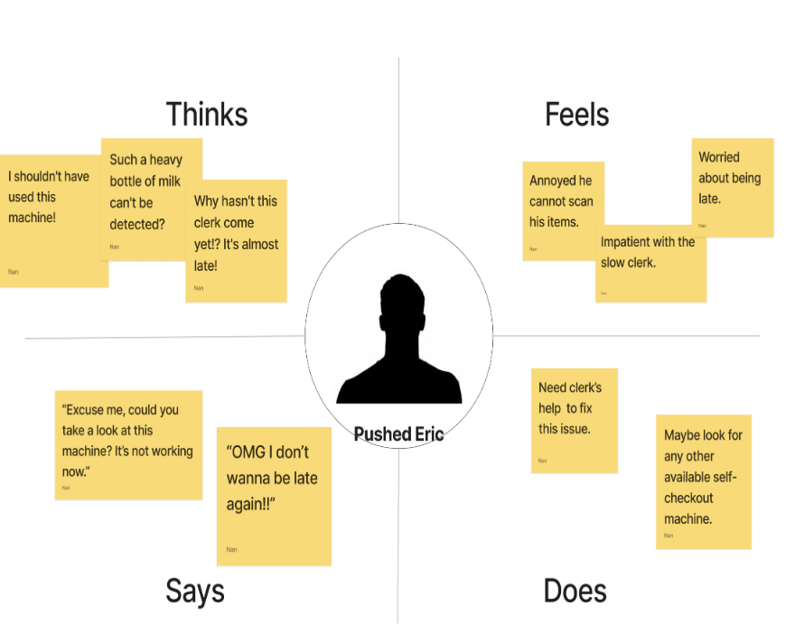
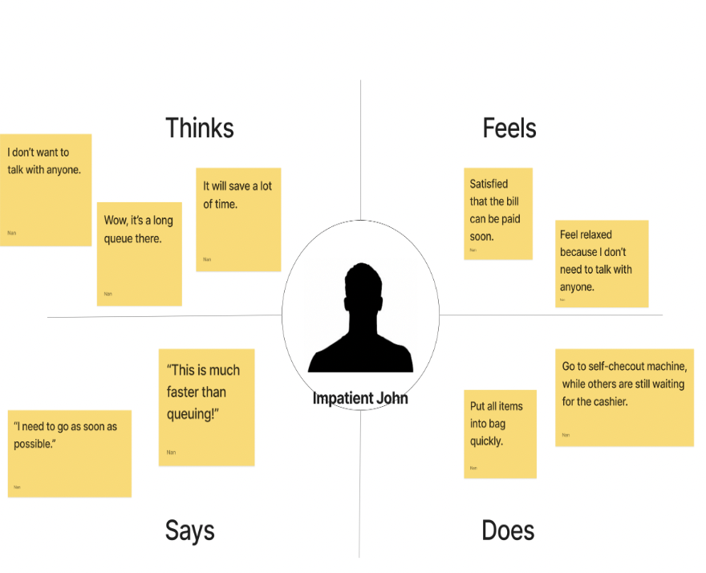

In this project, we learned about user research. Specifically, we need to choose an interface, then observe and interview how users interact with it.
User research is never easy. It is a very important part of the learning journey of becoming a designer, which allows us to discover our users’ best interests.
In order to practice and strengthen the design process, we will also make personas and storyboards based on the interview results, so as to help us understand the goals and needs of users, and record piratic information.
The interface I chose was CVS self-checkout machine.
The reason I chose CVS self-checkout machine is that when I used it in the past, there were often some unexpected situations that made my payment process even more difficult. Therefore, I wanted to see what other people think about the self-checkout machine.
Then, I created two drafts with Figma, one showing the appearance and overall structure of a self-checkout machine, and the other showing the screen’s interface of a machine.
In order to construct user personas and storyboards, as a designer and UI researcher, I have to conduct an ethnographic study of the user group of self-checkout machines.
During this process, I observed whether the respondents had any difficulties using the self-checkout machine, and then interviewed them with two questions..
Q1: Do you prefer the self-checkout machine or checkout by cashier? And Why?
Self-checkout machine:
Cashier:
Q2:Is there any part of the self-checkout machine interface that you are unsatisfied with/can be improved?
According to the interview results, and some common behaviors of users I observed, I constructed 2 personas, each one is a four-quadrant empathy map.
In each empathy map, I provide some contextual information about users' environment, and show the main characteristics, ambitions, and frustrations of users I observed.
Eric is a rushed student and his next class will begin in 5 minutes. But when he is in the grocery store, there is some problem with the weight sensor and cannot detect any item. The user has to go and communicate with the clerk. The user waited for a long time before the clerk came over slowly.
John is an impatient person who always wants to use his time efficiently. He's also a bit introverted and doesn't like unnecessary interactions with people. When he wanted to check out, there happened to be an automatic checkout machine available, but there were still five people in line at the cashier's side.
Next, we need to create a storyboard for our persona's user journey from start to end, which is a visual representation of a story. In this process, as a designer, we need to create a reasonable scenario, and conceive some specific details of human-computer interaction, such as user emotion and machine interface changes, and so on.
Persona and storyboarding, two effective tools for a designer, not only enable me to better understand how groups of users interact with a product, but also further my understanding of a product. During this assignment, I learned a lot of lessons. First of all, I should clearly state my observation, which is different from interviews. Second, the storyboard is built based on the persona, so the storyboard must fit the persona exactly. Based on the reviewers' feedback, if I have time, I will refactor my persona and storyboard to make my storyboard better match my persona. Moreover, I will have more interview questions, such as users' views on a certain component, etc., in order to understand the user experience more comprehensively.